編集部まとめ記事 一覧
試合結果・速報・移籍情報・データのまとめ記事を新しい順に並べています。
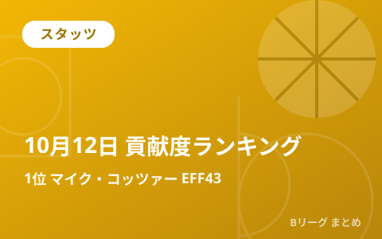
順位・日程
10月12日の貢献度ランキング 1位はマイク・コッツァー（横浜BC）の43 日本人トップは新井 楽人

試合結果
名古屋Dが開幕5連勝 齋藤拓実21得点10アシスト 秋田は宇都宮に約3年ぶり勝利

試合結果
広島がトリプルOTで開幕6連勝 長崎は群馬の5連勝ストップ 千葉Jは連敗脱出
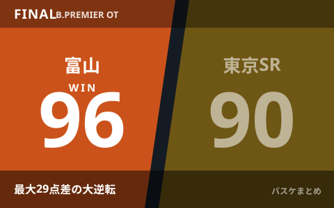
試合結果
富山が最大29点差の大逆転 延長96-90で東京SR撃破 宇都宮は茨城下し北関東ダービー制す
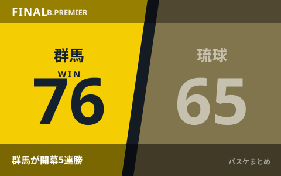
試合結果
群馬クレインサンダーズが開幕5連勝 長崎ヴェルカは馬場雄大27得点で今季初勝利
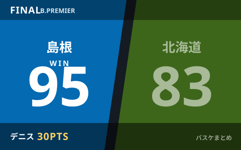
試合結果
島根スサノオマジックが今季ホーム初勝利 レバンガ北海道に95-83、デニス30得点・ケイと岡田侑大がダブルダブル
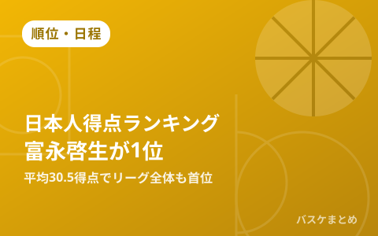
順位・日程
Bプレミア日本人得点ランキング、富永啓生がリーグ全体でも首位に 黒川虎徹・岡田侑大が続く
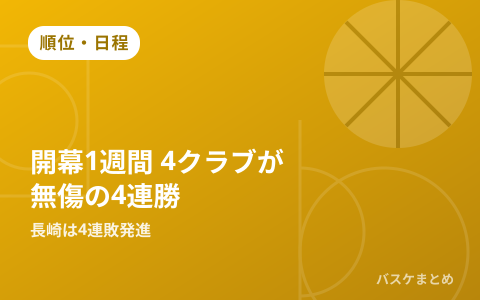
順位・日程
Bプレミア開幕1週間 群馬・広島・名古屋D・三遠が無傷の4連勝 昨季王者長崎は4連敗発進
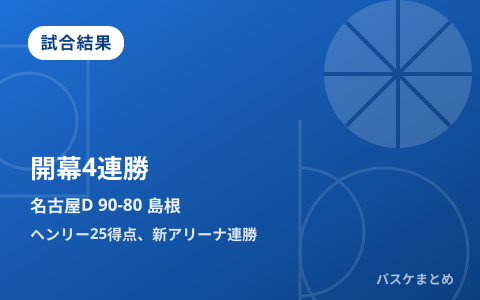
試合結果
名古屋D、開幕から無傷の4連勝 新アリーナの島根に連勝 ヘンリー25得点、齋藤拓実16得点9アシスト
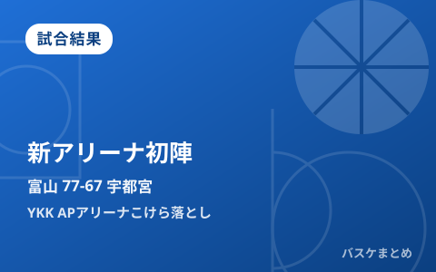
試合結果
富山、新アリーナ「YKK APアリーナ」こけら落としを白星で飾る 宇都宮に77-67、ウィリスジュニアがダブルダブル
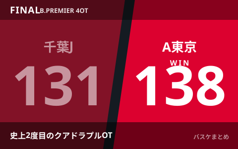
試合結果
千葉J×A東京、開幕戦がBリーグ史上2度目のクアドラプルオーバータイムに もつれた60分をA東京が138-131で制す
速報
横浜BC新助っ人マクガスティが負傷離脱 全治2～3カ月でIL入り、茨城は中村功平が約6カ月ぶり復帰
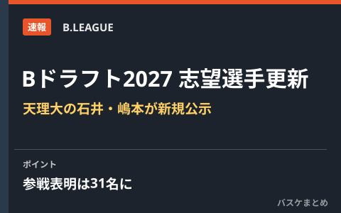
速報
【Bドラフト2027】志望選手リスト更新 天理大の石井凜太郎・嶋本昇太が新たに公示 参戦表明は31名に
速報
千葉J、コステロが開幕戦で負傷しIL登録 全治4～6週間 今季早くも2人目の離脱に
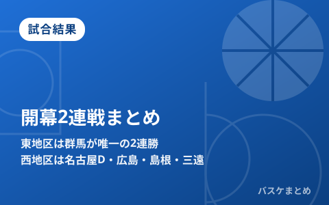
試合結果
【Bプレミア開幕2連戦まとめ】東地区は群馬が唯一の2連勝、西地区は名古屋D・広島・島根・三遠が白星発進
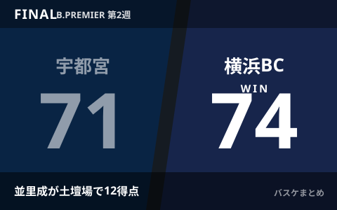
試合結果
横浜BCが宇都宮に劇的逆転勝利 並里成が土壇場で12得点、Bプレミア初白星
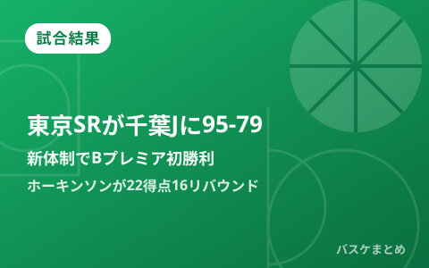
試合結果
東京サンロッカーズがBプレミア初勝利 千葉Jに95-79、ホーキンソンが22得点16リバウンド
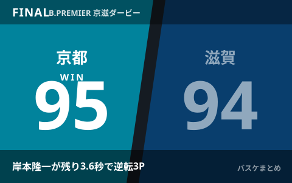
試合結果
京都が滋賀に95-94の劇的勝利 新加入・岸本隆一が残り3.6秒の逆転3Pで開幕戦を白星発進
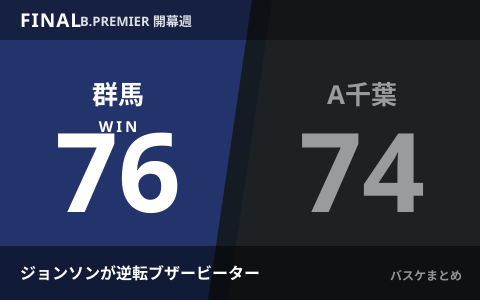
試合結果
群馬がA千葉に76-74の劇的勝利 ジョンソンの逆転ブザービーターで開幕連勝
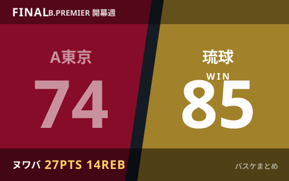
試合結果
琉球がA東京に85-74でリベンジ ヌワバ27得点14リバウンド、B.ONEは徳島がダブルOTの死闘制し横浜EXを撃破
最終更新: 2026年10月13日 01:37